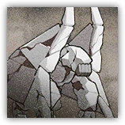
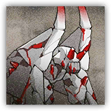

守墓石像 Tombstone
近战 物理；精英 构装
|
 |
深池部队中的特殊法术造物。创造者为头领蔓德拉。据蔓德拉所说，她在郊外的坟墓里学习源石技艺，守墓石像是最初的同伴。石像外形有过多次更迭，最新造型仿自某支血脉古老的萨卡兹。 |
守墓石像丨Tombstone
大型构装，无阵营
| AC 16 | 先攻 -1（9） |
| HP 102（12d10+36） | |
| 速度 25尺，飞行30尺（仅石化重生激活期间） | |
| 调整 | 豁免 | 调整 | 豁免 | 调整 | 豁免 | |||||||||
|---|---|---|---|---|---|---|---|---|---|---|---|---|---|---|
| 力量 | 19 | +4 | +4 | 敏捷 | 8 | -1 | -1 | 体质 | 17 | +3 | +3 | |||
| 智力 | 5 | -3 | -3 | 感知 | 10 | +0 | +0 | 魅力 | 6 | -2 | -2 |
| 免疫 毒素；中毒，魅惑，恐慌，力竭 |
| 感官 黑暗视觉60尺，被动察觉10 |
| 语言 理解维多利亚语和塔拉语但无法说话 |
| CR 6（XP 2,300；PB+3） |
特质 Traits
折射抗性 Refraction Resistance。守墓石像为抵抗法术或魔法效应而作的豁免具有优势。陷入沉默状态时此特性失效。
稳定重心 Immutable Stance。守墓石像免疫被推离或强行令其陷入倒地的效果，除非该效果的来源体型比石像更大。
动作 Actions
多重攻击 Multiattack。守墓石像使用猛击或碎石发动共计两次攻击。
猛击 Slam。近战攻击检定：+7，触及5尺或射程60尺。命中：14（3d6+4）点钝击伤害。
碎石 Crumble。远程攻击检定：+7，触及5尺或射程60尺。命中：15（2d10+4）点钝击伤害。
石化重生 Petrifying Rebirth（仅浴血期间）。守墓石像恢复50点生命值并陷入石化状态直到其下回合开始。此外，石像还获得30尺飞行速度，持续1分钟。
愤怒的守墓石像 Furious Tombstone
近战 物理；精英 构装

|
 |
深池部队中的特殊法术造物。创造者为头领蔓德拉。据蔓德拉所说，她在郊外的坟墓里学习源石技艺，守墓石像是最初的同伴。石像外形有过多次更迭，最新造型仿自某支血脉古老的萨卡兹。这款石像饱含着蔓德拉对维多利亚的怒火。 |
愤怒的守墓石像丨Furious Tombstone
巨型构装，无阵营
| AC 18 | 先攻 -1（9） |
| HP 150（13d12+65） | |
| 速度 25尺，飞行30尺（仅石化重生激活期间） | |
| 调整 | 豁免 | 调整 | 豁免 | 调整 | 豁免 | |||||||||
|---|---|---|---|---|---|---|---|---|---|---|---|---|---|---|
| 力量 | 21 | +5 | +5 | 敏捷 | 8 | -1 | -1 | 体质 | 20 | +5 | +5 | |||
| 智力 | 5 | -3 | -3 | 感知 | 11 | +0 | +0 | 魅力 | 6 | -2 | -2 |
| 免疫 毒素；中毒，魅惑，恐慌，力竭 |
| 感官 黑暗视觉60尺，被动察觉10 |
| 语言 理解维多利亚语和塔拉语但无法说话 |
| CR 9（XP 5,000；PB+4） |
特质 Traits
折射抗性 Refraction Resistance。守墓石像为抵抗法术或魔法效应而作的豁免具有优势。陷入沉默状态时此特性失效。
稳定重心 Immutable Stance。守墓石像免疫被推离或强行令其陷入倒地的效果，除非该效果的来源体型比石像更大。
动作 Actions
多重攻击 Multiattack。愤怒的守墓石像使用猛击或碎石发动共计三次攻击。
猛击 Slam。近战攻击检定：+9，触及5尺或射程60尺。命中：15（3d6+5）点钝击伤害。
碎石 Crumble。远程攻击检定：+9，触及5尺或射程60尺。命中：16（2d10+5）点钝击伤害。
石化重生 Petrifying Rebirth（仅浴血期间）。守墓石像恢复50点生命值并陷入石化状态直到其下回合开始。此外，石像还获得30尺飞行速度，持续1分钟。